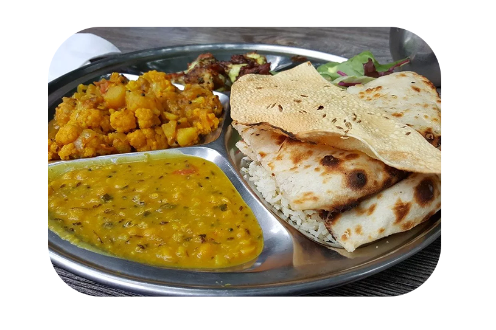
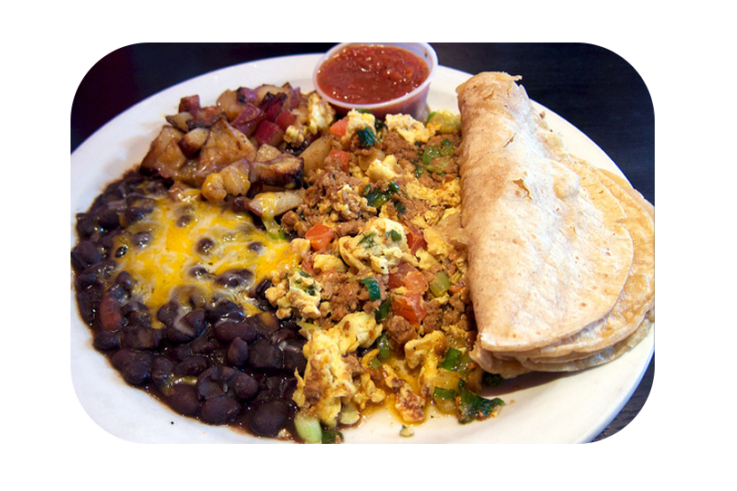
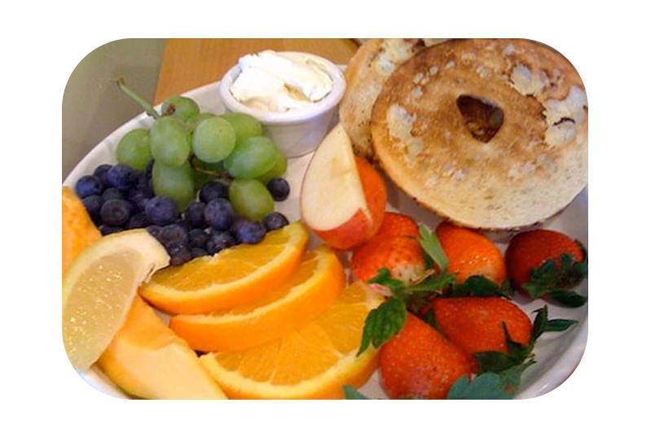
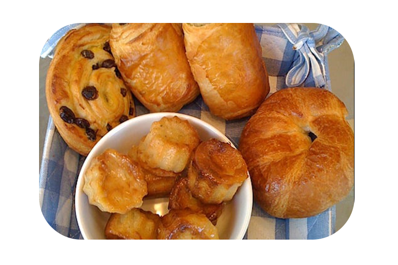

Colazioni dolci o salate?

La colazione è il pasto più importante della giornata, ma non tutti mangiano o bevono le stesse cose. Le abitudini cambiano molto in base alla cultura e alle tradizioni. Facciamo un viaggio per scoprire quali sono le colazioni nel mondo, tra specialità salate e dolci.

INGHILTERRA
fagioli, salsiccia, bacon, uova, funghi, frittelle di patate e pane tostato
INDIA
patate arrosto al rosmarino, tofu, lenticchie, salsiccia vegetariana
COREA
kimchi - verdure fermentate condite con spezie - e una ciotola di riso
MESSICO
chilaquiles piccanti con pomodoro, formaggio fuso, coriandolo,punte di vitello e nachos
MAROCCO
Baghir - crepe di farina di semola - pane con mostarda, confetture e formaggio
HAWAII
frutta fresca tra ananas, cocco, mango e papaya e ciambelle
SVEZIA
Pannkakor, pancake senza lievito, con marmellate di diverso tipo
FRANCIA
pane e burro, croissant, brioche con marmellata di ogni genere